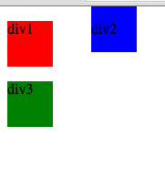

Static, Relative, Absolute, and Fixed Positioning in CSS
What does it all mean?
01/23/15
If you are new to HTML and CSS, then you might be trying to figure out how exactly to position elements. The position: attribute is essential for placing elements on the page. There are several positions: static, relative, absolute, and fixed. In this blog, I will attempt to go through each attribute and give examples of situations in which they will be useful.
Static is the default position of all HTML elements. It essentially leaves your element subject to the rest of your HTML code as it is. In this case, the order in which the div boxes appear makes them stack on top of eachother in the top left corner of the page.
Since static is the default, you will rarely want to use it unless the position for your element is changed by some circumstance. For example, maybe you've defined all of your divs in CSS as having another position already, but you want to keep one static.

Relative positioning allows for an element to move relative to where it would normally be. It also leaves the other elements intact as if it had not been removed from its normal position. In this example, we will move div2 right 100px. As you can see, the positions of the other blocks remain unchanged. This is useful if you like everything about the layout of your page but just want to move that one element.
Absolute positioning on the other hand, does not leave the order of the elements intact when it is removed. If we change div2 back to it's original position, and then change div1's position to absolute and move it out 100px, then we will see that instead of leaving a blank space, div1's original spot is filled by div2. Another aspect of the absolute position is that instead of being moved in relation to its original position on the screen, it is moved in relation to its containing block (in this case, the html document itself). This is useful if you want to completely move an element and remove its effects on surrounding elements.
Fixed positioning, like absolute, also leaves no blank space behind it. However, unlike absolute, it moves in relation to the browser screen. This means that it will stay in the same place as you scroll left, right, up, or down. It's often used for side bars, and navigational bars and things like that. So, let's see what happens when we take a fixed div2 and stick it to the top of the browser window.
Here is div2 at the very top of the browser.
Here we scroll down and...
Suprise! It stays with us while we scroll through the page.
Hopefully this was somewhat helpful as an introduction to positioning in CSS. Remember: take your time, don't give up, and have fun!